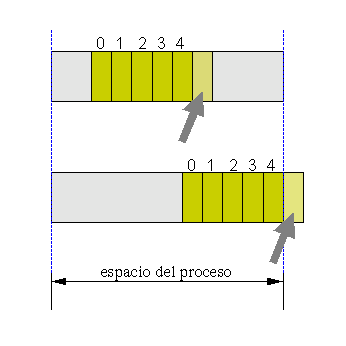
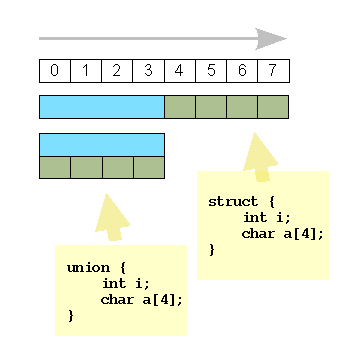

Casi todos los lenguajes proveen una manera de combinar variables simples en alguna forma de agregación. La declaración
tipo nombre[cant_elementos];
define un bloque llamado nombre de cant_elementos objetos consecutivos de tipo tipo, lo que habitualmente recibe el nombre de arreglo, vector o array. Sus elementos se acceden indexando el bloque con expresiones enteras entre corchetes. En C, los arreglos se indexan a partir de 0.
int dias[12];
dias[0] = 31;
enero = dias[0];
febrero = dias[1];
a = dias[6 * b - 1];
double saldo[10];
for(i=0; i<10; i++)
saldo[i] = entradas[i] - salidas[i];
Al ser declarados, los arreglos pueden recibir una inicialización, que es una lista de valores del tipo correspondiente, indicados entre llaves. Esta inicialización puede ser completa o incompleta. Si se omite la dimensión del arreglo, el compilador la infiere por la cantidad de valores de inicialización.
int dias[12] = { 31, 28, 31, 30, 31,
30, 31, 31, 30, 31, 30, 31 };
/* inic. completa */
double saldo[10] = { 150.40, 170.20 };
/* inic. incompleta */
long altura[] = { 3600, 3400, 3200, 6950 };
/* se infiere "long altura[4]" */
Los siguientes son errores muy comunes y lamentablemente el lenguaje C no provee ayuda para prevenirlos:
La dimensión dada en la declaración del arreglo dice cuántos elementos tiene. Esto no quiere decir que exista un elemento del arreglo con ese índice (porque se numeran a partir de 0):
int tabla[5];
/* error! el último elemento es tabla[4]: */
tabla [5] = 1;
La última instrucción equivale a acceder a un elemento fuera de los límites del arreglo. Este programa, erróneo, compilará sin embargo correctamente. Al momento de ejecución, la conducta dependerá de cuestiones estructurales del sistema operativo. En variantes modernas de UNIX puede resultar un error de violación de segmentación o falla de segmentación, lo que indica que el proceso ha rebasado los límites de su espacio asignado y el sistema de protección del sistema operativo ha terminado el proceso.
Sin embargo, en algunos otros casos, el error puede pasar inadvertido al momento de ejecución porque el acceso, a pesar de superar los límites del arreglo, no cae fuera del espacio del proceso. En este caso la ejecución proseguirá, pero se habrá leído o escrito basura en alguna zona impredecible del espacio de memoria del proceso.
|
 |
El diagrama ilustra dos casos de acceso indebido a un elemento inexistente de un arreglo. Suponemos tener una declaración tal como int tabla[5], y una instrucción errónea que hace referencia al elemento tabla[5]. En el primer caso, la variable estructurada tiene algún otro contenido contiguo dentro del espacio del proceso, y el acceso lee o escribe basura. En el segundo caso, el acceso cae fuera del espacio del proceso, y según la reacción del sistema operativo, puede ocurrir lo mismo que en el caso anterior, o bien el proceso puede ser terminado por la fuerza. |
Es frecuente confundir las operaciones de inicialización y de asignación. La inicialización sólo es válida en el momento de la declaración: no es legal asignar un arreglo. La asignación debe forzosamente hacerse elemento por elemento.
int tabla[5];
tabla[] = { 1, 3, 2, 3, 4 }; /* incorrecto */
Esta instrucción no es compilable. Debe reemplazarse por:
tabla[0] = 1;
tabla[1] = 3; ...etc
En C se pueden simular matrices y arreglos de más dimensiones creando arreglos cuyos elementos son arreglos. La declaración:
int matriz[3][4];
expresa un arreglo de tres posiciones cuyos elementos son arreglos de cuatro posiciones. Una declaración con inicialización podría escribirse así:
int matriz[3][4] = {
{1, 2, 5, 7},
{3, 0, 0, 1},
{2, 8, 5, 4}};
y correspondería a una matriz de tres filas por cuatro columnas.
La primera dimensión de un arreglo multidimensional puede ser inferida:
int matriz[][4] = {
{1, 2, 5, 7},
{3, 0, 0, 1},
{2, 8, 5, 4}};
El recorrido de toda una matriz implica necesariamente un lazo doble, a dos variables:
for(i=0; i<3; i++)
for(j=0; j<4; j++)
a[i][j] = i + j;
Las variables estructuradas de C permiten agrupar una cantidad de variables simples de tipos eventualmente diferentes. Las estructuras y uniones aportan la ventaja de que es posible manipular este conjunto de variables como un todo.
Es posible inicializar estructuras, asignar conjuntos de constantes a las estructuras, asignar estructuras entre sí, pasarlas como argumentos reales a funciones, y devolverlas como valor de salida de funciones. En particular, ésta viene a ser la única manera de que una función devuelva más de un dato.
struct persona {
long DNI;
char nombre[40];
int edad;
};
struct cliente {
int num_cliente;
struct persona p;
double saldo;
};
Las declaraciones de más arriba no definen variables, con espacio de almacenamiento, sino que simplemente enuncian un nuevo tipo que puede usarse en nuevas declaraciones de variables. El nombre o tag dado a la estructura es el nombre del nuevo tipo. En las instrucciones siguientes se utilizan los tags definidos anteriormente y se acceden a los diferentes miembros de las estructuras.
struct cliente c1, c2;
c1.num_cliente = 1001;
c1.p.DNI = 14233326; /* acceso anidado */
c1.p.edad=40;
c2 = c1; /* copia de estructuras */
struct persona p1 = {17698735, "Juan Pérez", 30};
c2.p = p1;
Una declaración con inicialización completa:
struct cliente c3 = {
1002,
{17698735, "Juan Pérez", 30},
150.25 };
También es legal declarar una variable struct junto con la enunciación de su tipo, con o sin el tag asociado y con o sin inicialización.
struct complejo { double real, imag; } c;
struct { double real, imag; } c;
struct complejo {
double real, imag;
} c = { 20.5, -7.3 };
Una función que recibe y devuelve estructuras:
struct punto {
int x, y;
};
struct punto promedio(struct punto p1,
struct punto p2)
{
struct punto z;
z.x = (p1.x + p2.x) / 2;
z.y = (p1.y + p2.y) / 2;
return z;
}
En una estructura, el compilador calcula la dirección de inicio de cada uno de los miembros dentro de la estructura sumando los tamaños de los elementos de datos. Una unión es un caso especial de estructura donde todos los miembros "nacen" en el mismo lugar de origen de la estructura.
union intchar {
int i;
char a[sizeof(int)];
};
Este ejemplo de unión contiene dos miembros, un entero y un arreglo de tantos caracteres como bytes contiene un int en la arquitectura destino. Ambos miembros, por la propiedad fundamental de los unions, quedan "superpuestos" en memoria. El resultado es que podemos asignar un campo por un nombre y acceder por el otro. En este caso particular, podemos conocer qué valores recibe cada byte de los que forman un int.
union intchar k;
k.i = 30541;
b = k.a[2];
|
El diagrama ilustra los diferentes desplazamientos u offsets a los que se ubican los miembros en una union y en una struct, suponiendo una arquitectura subyacente donde los ints miden cuatro bytes. |
 |
Se pueden definir estructuras donde los miembros son agrupaciones de bits. Esta construcción es especialmente útil en programación de sistemas donde se necesita la máxima compactación de las estructuras de datos. Cada miembro de un campo de bits es un unsigned int que lleva explícitamente un "ancho" indicando la cantidad de bits que contiene.
struct disp {
unsigned int encendido : 1;
unsigned int
online : 1,
estado : 4;
};
En este ejemplo "inventamos" un dispositivo mapeado en memoria con el cual comunicarnos en base a un protocolo, también imaginario. Implementamos con un campo de bits un registro de control que permite encenderlo o apagarlo, consultar su disponibilidad (online u offline), y hacer una lectura de un valor de estado de cuatro bits (que entonces puede tomar valores entre 0 y 15). Todo el registro de comunicación cabe en un byte.
Nuestro dispositivo imaginario podría encenderse, esperar a que se ponga online, tomar el promedio de diez lecturas de estado y apagarse, con las instrucciones siguientes. Como se ve, no hay diferencia de acceso con las estructuras.
struct disp d;
d.encendido = 1;
while(!d.online);
for(p=0, i=0; i<10; i++)
p += d.estado;
p /= 10;
d.encendido = 0;
1. Escribir una declaración con inicialización de un arreglo de diez elementos double, todos inicialmente iguales a 2.25.
2. Escribir las sentencias para copiar un arreglo de cinco longs en otro.
3. Escribir las sentencias para obtener el producto escalar de dos vectores.
4. Escribir una función que devuelva la posición donde se halla el menor elemento de un arreglo de floats.
5. Dado un vector de diez elementos, escribir todos los promedios de cuatro elementos consecutivos.
6. Declarar una estructura punto conteniendo coordenadas x e y de tipo double. Dar ejemplos de inicialización y de asignación.7. Declarar una estructura segmento conteniendo dos estructuras punto. Dar ejemplos de inicialización y de asignación. Dar una función que calcule su longitud.
8. ¿Cuál es el error en estas sentencias de inicialización?
a) struct alfa {
int a, b;
};
alfa = { 10, 25 };
b) struct alfa {
int a, b;
};
alfa d = { 10, 25 };
c) union dato{
char dato_a[4];
long dato_n;
} xdato = { "ABC",
1000 };
Ejercicios Adicionales
Ejercicios Avanzados